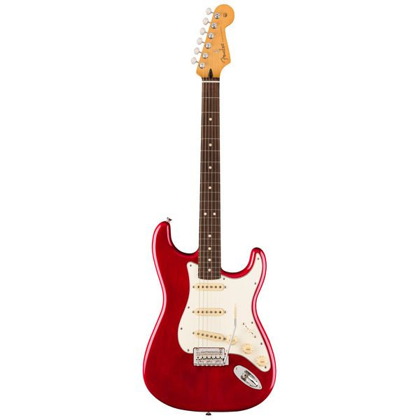
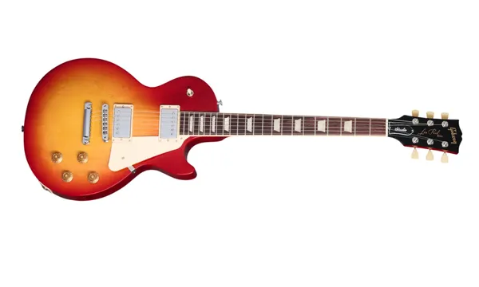
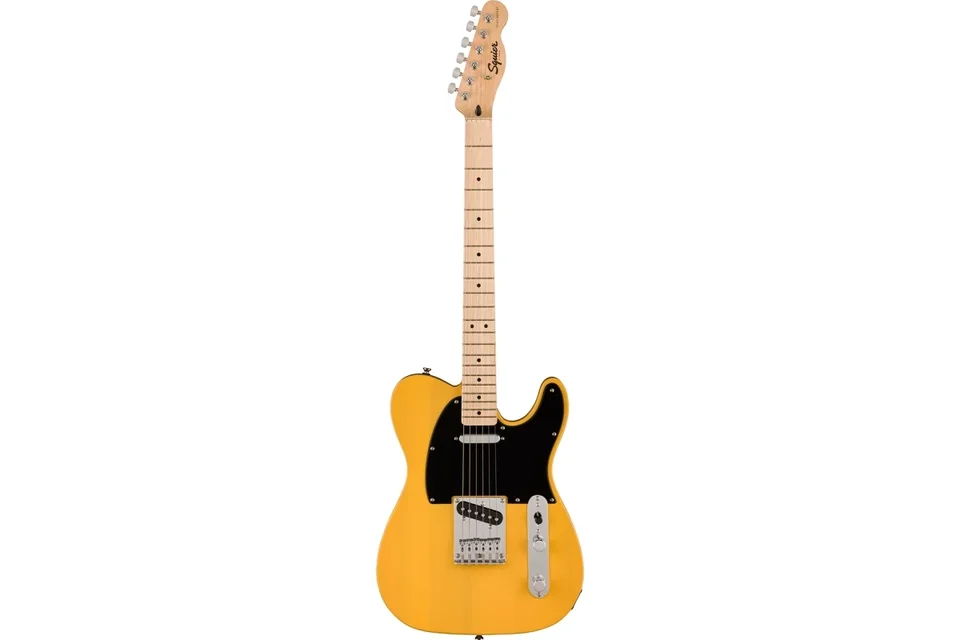

Fender Stratocaster

Average cost: $700 - $2,000+
History:
Introduced in 1954 by Leo Fender. It quickly became one of the most influential electric guitars in history and was used by players like Jimi Hendrix.
Hardware
- Body: Alder or ash
- Pickups: 3 single-coil pickups
- Bridge: Tremolo (synchronized vibrato)
- Controls: 1 volume, 2 tone knobs, 5-way switch
Exlusives
Very bright and clear tone and extremely versatile (rock, blues, pop, funk)
Link to marketGibson Les Paul

Average cost: $1,200 – $3,500+
History:
Released in 1952 by Gibson in collaboration with guitarist Les Paul. Became iconic in rock music.
Hardware
- Body: Mahogany with maple top
- Pickups: 2 humbuckers
- Bridge: Tune-o-matic
- Controls: 2 volume, 2 tone knobs
Difference
Thick, warm tone
Great sustain
Heavier than most guitars
Link to marketFender Telecaster

Average cost: $700 – $1,800
History:
Released in 1950, the first mass-produced solid-body electric guitar.
Hardware
- Body: Alder or ash
- Pickups: 2 single-coil
- Bridge: Fixed bridge
- Controls: 1 volume, 1 tone
Difference
- Very sharp “twang” tone
- Extremely simple and durable design